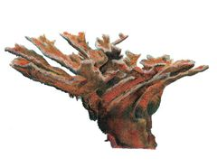
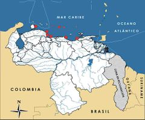

Acropora palmata
| Coral cacho de alce | |
|---|---|
|  | |
| Riesgo de extinción | |
 Vulnerable (UICN) | |
| Clasificación científica | |
| Reino: | Animalia |
| Filo: | Cnidaria |
| Clase: | Anthozoa |
| Orden: | Scleractinia |
| Familia: | Acroporidae |
| Género: | Acropora |
| Especie: | Acropora palmata |
| Nombre binomial | |
|
Acropora palmata Lamarck, 1816 | |
| Distribución | |
|
 Mapa de distribución de Acropora palmata | |
Contenido
Información de Evaluación
- Categoría y Criterio Regional: Vulnerable A2ce
- Fecha de Evaluación Regional: 2015
- Evaluadores: Jesús Morales-Campos y Ariany García-Rawlins
- Categoría y Criterio Global: En Peligro Crítico A2ace
Justificación
Evaluaciones Previas
1999: No Evaluado (NE)
2008: Vulnerable (VU)
Información General
Nombres comunes
Coral cacho de alce, elkhorn coral.
Notas taxonómicas
Sinónimos
Descripción
Es el coral de mayor tamaño de todas las especies del género Acropora. Alcanza cuatro metros de envergadura, dos metros de altura y un diámetro en su base de 40 cm (Gladfelter, W. B. 1982, Veron 2000, Aronson y Precht 2001, Precht et al. 2002). La base de la colonia se encuentra firmemente anclada al sustrato. Sus ramas tienen forma aplanada y en algunos casos pueden ser redondeadas.
Distribución
Se distribuye en islas oceánicas en la mayor parte de los arrecifes del Caribe, desde el sur de Florida y el norte de Bahamas hasta el Caribe Sur en Colombia, Trinidad y Tobago y Venezuela (Precht et al. 2002). Igualmente se encuentra desde el norte de Veracruz, en México, hasta Barbados, no así en Bermudas ni al norte del golfo de México.
- Sistema: Marino
- Bioregión:
- Intervalo altitudinal (m): 40
- Endémica: No
Situación
Fue una especie abundante y conspicua hasta mediados de los años ochenta, cuando resultó afectada por un evento epizoótico de enfermedad de banda blanca, huracanes, incremento de la depredación y blanqueamiento (Gladfelter, W. B. 1982, Aronson y Precht 2001). Formaba entramados densos, monoespecíficos y con alta heterogeneidad espacial a profundidades someras e intermedias (Precht et al. 2002). Desde la referida mortandad hasta la fecha, numerosas áreas de arrecifes del Caribe han sufrido pérdidas de más del 95% de su cobertura (Precht et al. 2002). Hoy en día su distribución y abundancia están poco documentadas (Diaz-Soltero 1999, Oliver 2005, Granado et al. 2012). El estado de sus poblaciones en los arrecifes venezolanos es poco conocido. Estimaciones de densidad promedio varían entre cero individuos por metro cuadrado en el parque nacional Morrocoy, hasta 0,11 individuos/m² en el parque nacional Archipiélago de Los Roques (A. L. Zubillaga obs. pers., Zubillaga et al. 2005). Su importancia como especie constructora del arrecife es evidente en muchas localidades, donde aún se pueden observar estructuras de carbonato de calcio constituidas por colonias muertas que han permanecido en pie (por ejemplo, en Morrocoy). En la mayoría de estos lugares no se han observado signos de recuperación significativos (A. L. Zubillaga obs. pers.). No obstante, en algunos puntos del archipiélago de Los Roques se presenta una densidad de individuos relativamente representativa en el contexto regional y una alta proporción (> 55%) de individuos con tallas medianas y pequeñas (aún inmaduros). Esto sugiere que algunos arrecifes muestran áreas de recuperación (Granado et al. 2012). Aunque el estado actual de las poblaciones en el Caribe no es muy claro, la Unión Internacional para la Conservación de la Naturaleza considera al coral cacho de alce En Peligro Crítico desde 2008 (IUCN 2014), situación de amenaza que ratifica recientemente la legislación estadounidense (USFWS 2014). En Colombia se le clasifica como En Peligro (Reyes et al. 2002b).
- EOO (km2): Temporalmente sin información
- AOO (km2): Temporalmente sin información
- Tendencia Poblacional: Estable
Amenazas
La especie se encuentra amenazada por la enfermedad de banda blanca, el incremento de la depredación debido al molusco gasterópodo Coralliophila abbreviata, la pérdida de la calidad del agua, el sobrecrecimiento por macroalgas y daños por anclas y botes. Es de hacer notar que la enfermedad de banda blanca fue la principal causa de mortalidad en los años ochenta y continúa afectando a la Acropora palmata, aunque con una baja incidencia (< 2%) (A. L. Zubillaga obs. pers.).
Conservación
La especie se encuentra incluida en el Apéndice II de la Convención sobre el comercio internacional de especies amenazadas de fauna y flora silvestres y en el Anexo III del Protocolo relativo a las áreas y flora y fauna silvestres especialmente protegidas en la región del Gran Caribe (SPAW 1991, Cites 2014). En Venezuela no se ha adoptado ninguna medida de conservación en particular. El coral cacho de alce se puede encontrar en algunos parques nacionales como Morrocoy y el Archipiélago Los Roques, aunque sus densidades han disminuido significativamente en las últimas dos décadas. Se propone el trasplante, estabilización y crecimiento de fragmentos de la especie (facilitación de la reproducción asexual), así como el cultivo de larvas. Es necesaria la identificación de zonas de recuperación y la implementación de planes de manejo para dichas áreas, junto con estudios de conectividad entre poblaciones de diferentes superficies del Caribe, a fin de determinar si su recuperación es factible a partir del aporte de larvas de áreas menos afectadas.
Autorías
Autores originales
Ainhoa L. Zubillaga, Carolina Bastidas y Aldo Cróquer
Colaboradores
Ilustrador
Ximenamaria Rausseo
Referencias
- Aronson, R. B. y Precht, W. F. (2001). White-band disease and the changing face of Caribbean coral reefs. Hidrobiología 460: 25-38.
- Cites. (2014). Apéndices I, II y III (válidos desde el 14 de septiembre de 2014). Convención sobre el Comercio Internacional de Especies Amenazadas de Fauna y Flora Silvestres (CITES). 47 pp.
- Diaz-Soltero, H. (1999). Endangered and threatened species, revision of candidate species list under the Endangered Species Act. Federal Register 64(120): 33466-33467.
- Gladfelter, W. B. (1982). White-band disease in Acropora palmata. Implications for the structure and growth of shallow reefs. Bulletin of Marine Science 32: 639-643.
- Granado, P., Velozo, P., Briceño, H., Ruiz, A., Sánchez-Arias, L. E., Parra, L. y Martín Morales, G. (2012). Distribución de áreas coralinas someras en el Archipiélago de La Orchila (caribe venezolano) empleando herramientas geomáticas. Interciencia 37(3): 221-226.
- IUCN (2014). The IUCN Red List of Threatened Species. Version 2014.3. Accesible en www.iucnredlist.org.
- Oliver, J. (2005). Endangered and threatened species; proposed threatened status for elkhorn coral and staghorn coral. Federal Register 70(88): 24359-24365.
- Precht, W. F., Bruckner, A. W., Aronson, R. B. y Bruckner, R. J. (2002). Endangered acroporid corals of the Caribbean. Coral Reefs 21: 41-42.
- Reyes, J., Santodomingo, N. y Lattig-Matiz, P. (2002b). Acropora palmata. En: Ardila, N., Navas, G. R. y Reyes, J. (Eds.). Libro rojo de los invertebrados marinos de Colombia. Serie Libros Rojos de Especies Amenazadas de Colombia. INVEMAR, Ministerio del Medio Ambiente. Bogotá, Colombia.*SPAW (1991). Procotolo Relativo a las Áreas y a la Flora y Fauna Silvestres Especialmente Protegidas del Convenio para la Protección y el Desarrollo del Medio Marino en la Región del Gran Caribe (conocido como SPAW, por sus siglas en inglés). Anexo III: List of Species of Marine and Coastal Flora and Fauna Protected Under Article 11(1)(c). 11 11(1).
- Rodríguez, J. P. y Rojas-Suárez, F. (1999). Libro Rojo de la Fauna Venezolana, segunda edición. PROVITA, Fundación Polar. Caracas. 444 pp.
- Rodríguez, J. P. y Rojas-Suárez, F. (Eds.) (2008). Libro Rojo de la Fauna Venezolana, tercera edición. Provita y Shell Venezuela, S. A. Caracas, Venezuela. 364 pp.
- USFWS (2014). Endangered and Threatened Wildlife and Plants; Adding 20 Coral Species to the List of Endangered and Threatened Wildlife. Federal Register. United States Fish and Wildlife Service (USFWS), Washington, D. C., EE. UU. 79(219): 67356-67359.
- Vargas-Ángel, B., Thomas, J. D. y Hoke, S. M. (2003). High-latitude Acropora cervicornis thickets off Fort Lauderdale, Florida, USA. Coral Reefs 22: 465-473.
- Veron, J. E. N. (2000). Corals of the World. Australian Institute of Marine Science. Townsville, Australia.
- Zubillaga, A. L., Bastidas, C. y Croquer, A. (2005). High densities of the Elkhorn coral Acropora palmata in Cayo de Agua, Archipelago Los Roques National Park, Venezuela. Coral Reefs 24(1): 86.
- Zubillaga, A. L., Bastidas, C. y Cróquer, A. (2015). Coral cacho de alce, Acropora palmata. En: J.P. Rodríguez, A. García-Rawlins y F. Rojas-Suárez (eds.) Libro Rojo de la Fauna Venezolana. Cuarta edición. Provita y Fundación Empresas Polar, Caracas, Venezuela. Recuperado de: animalesamenazados.provita.org.ve/content/coral-cacho-de-alce Jue, 07/06/2018 - 10:35